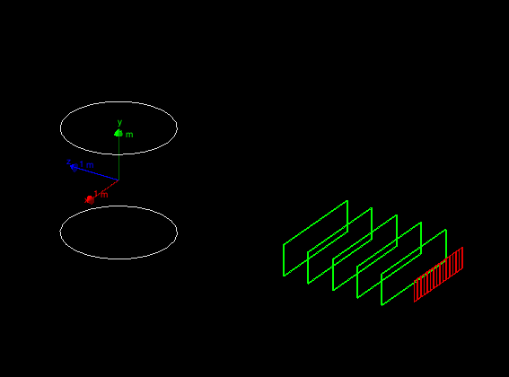

Hands on 3: Build detector, retrieve simulation results
Under Construction
In this third hands-on you will learn how to:
Create a semi-realistic geometry
Collect simulation output from sensitive detectors in hits
Use the event user-action to dump event information from hits on screen
Material:
The problem code for this hands-on session
can be downloaded here.
For your reference, the complete solution
is also available here.
Copy the the tar ball to your local area.
Un-tar the code, configure it with cmake, build it, and run it:
$ cd <tutorial> #change to your working directory
$ tar xzf HandsOn3-problem.tar.gz
$ cd HandsOn3-problem
$ cmake .
$ make -j 2 -f Makefile
$ ./G4tut
Note: Ignore compiler warning messages. They will disappear once you complete the exercise.
This geometry should be displayed:

The geometry is same as Hands On 2, as we will start from here to build a two-arm spectrometer.
The first arm is already defined, and in the first exercise you will build
the second arm completed with a calorimeter.
The second arm can be rotated between runs and the magnetic-field value can also be changed at run time using
user defined UI commands.
At the end of this hands on the complete geometry will look like this:
The complete setup will include:
Each arm with 5 drift-chamber planes to measure the
position of the passing particles (in green).
Each arm with a hodoscope made of scintillator plates to
measure the time-of-flight of the incoming particles (in red).
A central magnetic system to deflect the charged particles
(white cylinder).
Exercise: An electromagnetic calorimeter composed of CsI crystals
(yellow in the picture).
Exercise: An hadronic sampling calorimeter composed of Lead as
absorber and Scintillator as active material (blue).